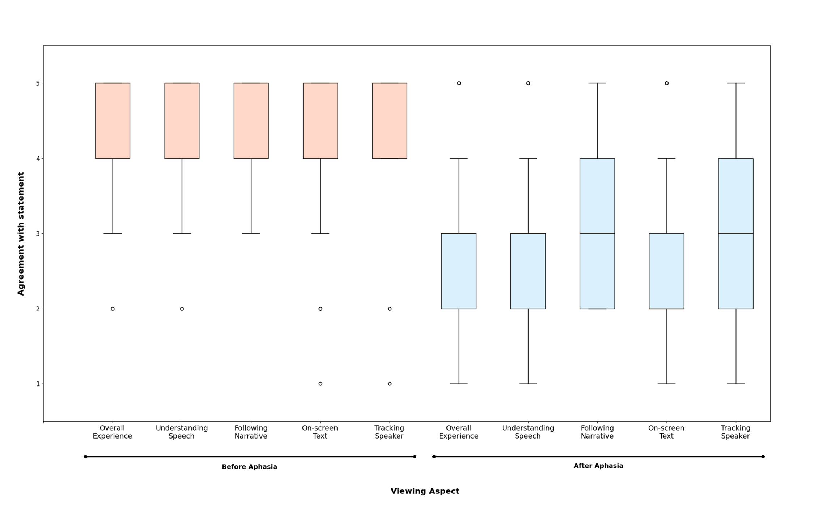
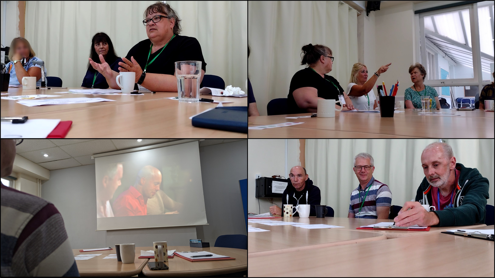
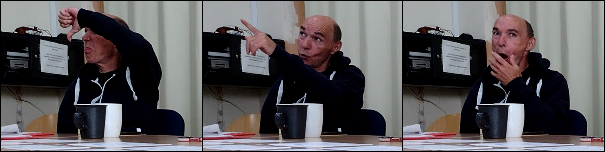
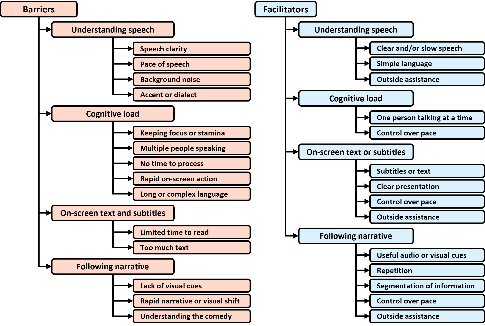

Lights, Camera, Access: A Closeup on Audiovisual Media Accessibility and Aphasia
Authors
- Alexandre Nevsky, Department of Informatics, King’s College London, London, UK. alexandre.nevsky@kcl.ac.uk
- Timothy Neate, Department of Informatics, King’s College London, London, UK. timothy.neate@kcl.ac.uk
- Elena Simperl, Department of Informatics, King’s College London, London, UK. elena.simperl@kcl.ac.uk
- Madeline Cruice, Department of Language and Communication Science, City, University of London, London, UK. m.cruice@city.ac.uk
Proceedings of the CHI Conference on Human Factors in Computing Systems (CHI ’24), May 11–16, 2024, Honolulu, HI, USA
Abstract
The presence of audiovisual media is a mainstay in the lives of many, increasingly so with technological progress. Accessing video and audio content, however, can be challenging for people with diverse needs. Existing research has explored a wide range of accessibility challenges and worked with disabled communities to design technologies that help bridge the access gap. Despite this work, our understanding of the challenges faced by communities with complex communication needs (CCNs) remains poor. To address this shortcoming, we present the first study that investigates the viewing experience of people with the communication impairment aphasia through an online survey (N=41) and two focus group sessions (N=10), with the aim of understanding their specific access challenges. We find that aphasia significantly impact viewing experience and present a taxonomy of access barriers and facilitators, with suggestions for future research.
CCS Concepts
Human-centered computing: Accessibility theory, concepts and paradigms
Keywords
- Accessibility
- audiovisual
- media
- aphasia
- challenges
- barriers
Introduction
Access to audiovisual media is an important part of modern life. We use media-rich content such as audio and video in radio, podcasts, television, or streamed media to come together socially [20, 92], to engage with culture [61], to stay informed about local and world events [50] and to take part in democratic processes [68, 95]. Despite its importance, audiovisual media is not always accessible to everyone, especially not for people living with disabilities. The intrinsically complex nature of audiovisual media – having both a visual and an audio aspect, as well as introducing additional cognitive complexity when combining the two [81] – introduces further cognitive [79] and language [8] barriers. These barriers make it so that people experiencing disabilities are often excluded from many aspects of modern life that rely on audiovisual media.
To address accessibility barriers, researchers have created a wide range of tools and interventions to support viewing. For instance, subtitles represent audio as text to facilitate viewing for people who are d/Deaf or hard of hearing (DHH) [85]. Prior research has thoroughly explored such accessibility interventions and, with advancements in technology, researchers have improved their capabilities, such as by dynamically changing the subtitles [11] or using machine learning to partially automate their creation [94]. Much of the existing research, however, involved a relatively small range of communities with disabilities, focusing on accessibility interventions that are better suited for the needs of those communities. A systematic review on accessibility interventions in our groups prior work [60], we reports that the vast majority (94%) of papers in their dataset involved the blind or visually impaired (BVI) or DHH communities and over three quarters (77%) focus on subtitles or audio descriptions. Consequently, much of this prior research fails to meet the needs of other communities, especially those living with complex communication needs (CCNs) for whom such interventions are unlikely to facilitate audiovisual media access.
Many people with CCNs find aspects of language challenging, which one might presume makes consuming audiovisual media particularly difficult. One such community is people living with aphasia, a language impairment that can affect reading, writing, speaking, and listening [91], and introduces many barriers with communication and understanding that are present in the wider community of people with CCNs. Due to the variable nature of aphasia and its severity, people with aphasia can experience audiovisual media differently from one another, having different access barriers and requiring different forms of support. This claim, however, has not been thoroughly explored in literature. While there breadth of prior accessibility research involving people with aphasia in exploring supporting everyday tasks, including supporting communication during meal ordering [62], the use of email services [1], or creative and artistic expression [58, 59], the consumption of audiovisual media is relatively unconsidered. With the aim of addressing this gap, we set out to answer two main questions: first, does aphasia significantly affect audiovisual media consumption?; and second, what aspects of audiovisual media affect people with aphasia’s viewing experience? In this paper, we present a first study that investigates the experience of people with aphasia – or indeed any population with complex communication needs – in viewing audiovisual media, the accessibility barriers faced, and the aspects of audiovisual media that facilitate access. We ran an online survey, reporting results from 41 respondents, and two focus group sessions with 10 participants with aphasia. In our main contributions we:
- Conduct the first investigation to explore if, and how, aphasia affects access to audiovisual media
- Present a taxonomy of barriers and facilitators people with aphasia face when accessing audiovisual media
- Provide recommendations for future research on addressing the inaccessibility of audiovisual media for people with aphasia
Related Work
Audiovisual Media Access
Given the significant role of audiovisual media in everyday life, access to it is paramount. The importance of access to audiovisual media is embodied through the European Accessibility Act [16], Section 508 of the Rehabilitation Act [17], and the Web Content Accessibility Guidelines (WCAG 2.1) [36], which all require video to be accessible to people with disabilities, with – at a minimum – non-redundant synchronised audio descriptions [65]. Consequently, researchers have explored ways to support viewing through accessibility interventions, such as audio descriptions and subtitles. Previous research has investigated these accessibility interventions with a wide range of devices and different viewing contexts, from more conventional methods of viewing, such as television [15, 26] and mobile devices [25, 86], to web-based viewing patterns [14, 83], and, more recently, novel interactive viewing patterns, including mixed reality [51], augmented reality [66], and virtual reality [55]. Moreover, with increasing consumption of new forms of audiovisual media through social media – such as short-form video formats like TikTok [13, 71] – researchers have explored novel accessibility interventions that are better suited to those viewing contexts [87].
While accessibility interventions are deployed on a wide range of devices, the interventions often explore existing interventions that were originally created for different contexts, rather than interventions that are designed to suit the device and viewing context [60]. Many of these interventions were initially designed for ‘conventional’ television viewing. For instance, subtitles and closed captions designed for the DHH communities and audio descriptions designed for the BVI community [45] were borne out of television standards and the capabilities of the time. These interventions have been inherited by new viewing contexts, for example, the implementation of subtitles in 360∘ immersive videos [32, 64], or extending the existing interventions with new features, such as dynamic subtitle placement [11] or enhancing audio description through sound design [47]. Additionally, novel technologies have been utilised to either improve the production of these interventions – such as incorporating machine learning methods in creating subtitles [94] and audio descriptions [88] – or improving their capabilities – such as using eye tracking to better place subtitles [40]. While these interventions can support a wide range of communities with disabilities [33, 46] and are used by people without disabilities, they often fail to consider the complex, variable nature of disability [84]. People with CCNs – such as people living with aphasia [38] – can find such interventions unsuitable, as they may experience challenges with reading or language comprehension. Instead, prior research has explored alternative approaches to supporting viewing, including strategic group viewing for people with aphasia that involved introducing the content prior to viewing and group discussions supported by a speech and language therapist (SLT) [8], or by using scaffolding techniques and outside support to support virtual reality viewing for people with intellectual disability [79]. Alternative interventions can also be adapted to the viewing device, such as work by [25] that utilises mobile robots to guide BVI viewers using smart tablet devices. To further our understanding on how to render audiovisual media more accessible for people with CCNs necessitates their direct involvement in research.
Involving People with Complex Communication Needs in Research
Accessibility researchers have called for more direct involvement of people living with disabilities in research [49], especially when it comes to the design and development of assistive technologies [5, 53]. This can be achieved through participatory design (PD), methods that view people with disabilities as active experts on their own disabilities with agency [22, 76], and have been used within Human-Computer Interaction research to collaborate with disabled individuals. However, a systematic review by [49] finds that only 10% of papers in the field reporting a user study used PD methods, suggesting that these communities are rarely engaged. Prior PD research has involved a wide range of communities, including deaf-blind individuals [4], older adults [42], and people with dementia [41]. Traditional PD methods, however, are often inaccessible for certain communities, such as people with autism spectrum disorder [19] and people with aphasia [35]. Aphasia is a language impairment caused by damage to the language areas of the brain, commonly because of a stroke, head injury, or because of degenerative damage, such as that caused by dementia [52]. Aphasia does not impact the person’s intelligence, ability to recall events, have opinions, or problem solve [82]. Oftentimes, aphasia can occur with other impairments because of damage to other areas of the brain, such as motor or cognitive impairments [3, 52]. These challenges with communication can make it difficult to recruit and directly engage people with aphasia, especially when it comes to providing informed consent or when working cooperatively in group environments [91]. Additionally, traditional PD methods often heavily rely on language-based processes, which can be cognitively demanding and result in fatigue [91]. To address these barrier, researchers have explored tangible and non-verbal design languages to facilitate access to PD and empower participants to easily express their thoughts and ideas [74]. This also includes special considerations when it comes to running such sessions with people with aphasia, such as having short and direct tasks introduced verbally, probing participants for feedback rather than relying on think-aloud, and preparing materials in an accessible manner, such as using text, verbal communication and images (e.g., visual rating scales) [24, 72]. Moreover, the use of tangible design languages – non-verbal and physically manipulable design presentations – can help support participants, such as using images to facilitate communication or tangible artefacts to represent concepts and ideas [91], or using co-designed personas to help people with aphasia engage with PD and offer the participants a different outlook on their health condition than their own [56].
Study 1 - Online Survey to Quantify Access Challenges Faced with Audiovisual Media
The online survey aimed to gain a wide range of responses on experiences with viewing audiovisual media. This included questions about the viewing context, such as the devices used, and viewing experiences both before the respondents’ aphasia and after.
Procedure
The survey was hosted on Qualtrics 1 and got approval from the King’s College London ethics board. It was anonymous and requested no personal information from the respondents other than their age, gender identity, and experience with audiovisual media. We followed several mitigation strategies in order to improve the accessibility of the survey for people with aphasia. For instance, in line with nationally recommended guidelines on preparing documents and materials for people with aphasia [27], and from feedback from SLTs and fellow researchers working with people with aphasia, the survey was broken up into thematic blocks that grouped no more than six related questions. Additionally, the questions were accompanied by representative images, such as a picture of a person reading a book for the question on reading ability.
The survey started with informed consent in which participants were first asked to read information about the research and survey, followed by true or false questions about the research to test attention. We also presented screening questions to ensure the participants fall within our eligibility criteria – being an adult who has had aphasia for at least six months. Participants were then asked demographic questions, including their age, gender identity, and their self-evaluated reading, writing, speaking, and understanding abilities on a five point Likert scale going from finding that aspect of language “very hard” to “very easy”. Answers were mostly presented as multiple choice to reduce barriers related to text entry with open answer fields, with images accompanying each option. Participants could provide examples or elaborate further using open-text field responses if they wanted to, but these responses were optional. The next section asked questions about the respondents viewing context, including the devices they used, how they interacted with said devices, how much audiovisual media they consumed, the types of media they consumed, and what activities, if any, they did while consuming the media. Finally, respondents were asked about their viewing experience both prior to their aphasia and with their aphasia. This included their general viewing experience, as well as how they experienced different viewing aspects, such as understanding dialogue, following the narrative or storyline, reading on-screen text, and tracking who the speaker was. These questions had a five-point Likert scale ranging from “I found/find it very hard” to “I found/find it very easy” and were accompanied by smiley face icons. An optional open text entry field was provided to enter additional details or examples.
Participants
The survey was shared with four aphasia support groups and charities in the UK, the US, and Australia through their social media pages (e.g., Facebook) and other online resources (e.g., blogs). The decision to distribute the survey through these existing online support groups was to allow us to reach a wide range of people living with aphasia who already participated in online communities, and were more comfortable with the use of technology. In total, we received responses from 41 people living with aphasia, 21 of whom identify as female and 20 as male. The respondents’ ages ranged from 30 to 90, with the average age being 59.44 (SD = 14.62). Even though respondents could be assisted by another person, such as a friend or family member, only 4 reported such support. Participants were asked to evaluate self-reported language abilities on a five-point Likert scale, with 1 representing finding that aspect of language to be “very hard” and 5 representing finding it “very easy”. The average Likert score for reading was 2.78 (SD = 1.26), writing was 2.10 (SD = 1.00), speaking was 2.20 (SD = 1.12), and understanding speech was 3.41 (SD = 1.20). We did not classify these participants in terms of receptive and expressive aphasia, as doing so would require extensive assessments from an SLT. To thank respondents for their time they could choose to participate in a prize raffle for a $50 and two $25 Amazon vouchers.
Data Analysis
We analysed the resulting data in two ways. First, we conducted a statistical analysis of the viewing experience data, including the respondents’ overall viewing experience and their experiences with different viewing aspects. We looked at the difference in viewing experiences across multiple viewing aspects for respondents prior to their aphasia and after, conducting a Wilcoxon Paired Signed-Rank test [48]. The Wilcoxon Paired Signed-Rank test does not provide a standardised effect size; therefore, the effect size is an estimate following recommendations from [73]. Additionally, we explored how language ability affects viewing experience by comparing respondents’ self-reported language abilities and the scores of the different viewing aspects, conducting a Pearson Correlation test [28]. Second, we looked at the respondents’ qualitative answers, focusing on the barriers they face when accessing audiovisual media. These were categorised based on whether the response related to viewing before aphasia or with aphasia, as well as by the affected viewing aspect.
| Overall experience | Understanding dialogue | Following narrative | On-screen text | Tracking speaker | |
|---|---|---|---|---|---|
| Mean Difference | -1.73 | -1.70 | -1.58 | -2.00 | -1.55 |
| Z-value | -4.952 | -4.852 | -5.064 | -5.074 | -5.131 |
| Sample size (N) | 34 | 30 | 33 | 33 | 34 |
| Effect size (r) | -0.828 | -0.873 | -0.855 | -0.872 | -0.848 |
Results of Online Survey
We now discuss both the quantitative (Likert) and qualitative results (typed comments) of the survey, reflecting on overall findings in terms of limitations and the implications for the field.
Quantitative Results
![Bar chart of viewing context data. Four bar charts one next to the other, showing the frequency of responses for the four categories, from left to right: devices used, how they interact with those devices, the type of audiovisual media content consumed, and what other activities they do while consuming audiovisual media. The numbers for each sections are - for devices used: TV 34, smartphone 32, tablet 23, computer 20, other 2; for interactions: remote control 35, smartphone app 26, mouse and keyboard 18, voice control 13, other 2; for type of content: TV series 29, films 29, news 29, documentaries 25, sports 18, social media content 14, game shows 11, music or dance shows 9, talk or panel shows 6, reality TV 4, other 3; and for other activities: eating 22, on their phone 20, chores 12, talking to others 12, nothing else 10, reading 4, other 4.](./figures/viewing_context_straight.png)
We present the results from the online survey (N=41), in which participants were asked questions about their aphasia, their viewing context, and their experiences with consuming audiovisual media. The answer frequencies for questions about the viewing context, including the devices they used, the way they interacted with said devices, the type of content they consumed, and what other activities they did while watching, can be found in Figure 1.

When looking at the viewing experience of people with aphasia, we found that their aphasia significantly negatively impacts the overall viewing experience, with the average score on a five-point Likert scale decreasing from 4.55 (SD = 0.71) to 2.83 (SD = 0.90), a decrease of more than a third (-1.73/5, 34.6%). This is also the case for all other viewing aspects – as can be seen in Figure 2 – with difficulties reading on-screen text having the most significant drop (-2.00/5, 40.0%). We conducted a Wilcoxon Signed-Rank test to determine the differences in participants’ viewing experience prior to their aphasia and with their aphasia. Participants overall viewing experience with aphasia is significantly negatively impacted than prior to their aphasia, with a strong effect size (Z=-4.897, p<.001, r=-0.828). This was also the case for the different audiovisual media viewing aspects we measured, as can be seen in Table 1.
We conducted Pearson’s correlation to determine what aspects of the participants’ language impairment correlated with the different viewing aspects. Overall, self-reported language ability had a large positive correlation with the decreased viewing experience (r=0.541, p<0.001), suggesting that more severe language impairment was significantly associated with worsened viewing experience. Understanding language had a large positive correlation with overall viewing experience with aphasia (r=0.533, p<0.001) while speaking ability was moderately positively correlated (r=0.420, p=0.007). Overall viewing experience, however, did not correlate significantly with the respondents reading (r=0.164, p=0.312) or writing (r=0.245, p=0.127) ability. Looking at the different aspects of audiovisual media viewing, self-reported language understanding and speaking abilities positively correlated significantly with understanding dialogue, following narrative, on-screen text, and tracking the speaker after getting aphasia (see Table 2). Unsurprisingly, we found that self-reported reading ability correlated positively with participants’ challenges around on-screen text (r=0.451, p=0.003), as well as with understanding dialogue (r=0.367, p=0.020).
Qualitative Responses
We collected qualitative responses to allow respondents to give more details about their viewing experiences, especially around the barriers they face when accessing audiovisual media. We collected a total of 106 relevant comments from 26 respondents, excluding comments that were irrelevant or did not say anything, such as “N/A”. Of the relevant comments, 34 discussed viewing experiences prior to aphasia and 72 experiences with aphasia. The comments that discussed experiences prior to having aphasia tended to focus on challenges around on-screen text or subtitles. For instance, multiple respondents mentioned challenges such as “text wasn’t on screen long enough”, with one respondent stating: “It goes too quickly or I misinterpret it”. Additionally, text was sometimes deemed “too small to read”, such as when reading “temperature weather forecast and sporting scores”. Some comments pertained to understanding speech, such as one respondent mentioning finding strong accents to be challenging to understand in some cases, however “very occasionally”. Speech was also deemed to be sometimes too fast leading to missing information.
When discussing their experiences consuming audiovisual media with aphasia, respondents mentioned a wider range of barriers to their viewing. Multiple respondents mentioned barriers to understanding speech caused by its fast pace, making it “all to quick for me to comprend”. Not being able to keep up with speakers was confusing, led to misinterpreting what was being discussed, and was tiring for viewers. This was especially pronounced in crowded scenes where several people are speaking, as one respondent explained: “I’m still focusing on the... what one person is saying so I miss what the next person is saying ”. Situations in which one person speaks at a time with a clear separation between speakers were easier to follow and understand. Additionally, loud background noise could distract from the speakers or make their speech hard to understand, including when “the background music is loud”.
Several respondents wrote about how missing or misunderstanding speech made it harder for them to follow the narrative, since “when you miss words, you cannot follow a story”. Being able to pause and rewind allowed some respondents to improve their understanding of the narrative by re-watching parts they did not understand, or by having someone else help them, as one respondent said: “Often my wife has to help me sort out the storyline”. This is not always possible, however, such as with live television, so one respondent stated having to “tape shows/series and go over them again”. Respondents also mentioned finding it difficult to follow narratives with many characters, where several respondents expressed difficulties remembering past events: “Depending on the story, some things can get quite complex and it’s remembering everything that happened beforehand that’s a must and having aphasia doesn’t help with that”.
When it came to on-screen text, which was the viewing aspect with the largest decrease in viewing experience with aphasia (-2.00 mean difference), the main barrier respondents discussed was how little time they had to read and understand the text: “Text are not on screen long enough for me to read it”. This was the case for text present in the content: “When there is a sign or a note... I have to pause to read it”; and with subtitles: “Text subtitles too fast”. While some respondents stated finding reading, in general, to be challenging, one participant expressed frustration at not being able to enjoy it as much anymore: “Although my reading ability is fine, I don’t enjoy reading nearly as much after my stroke, particularly more complex subjects. I suspect it’s taking me a little bit more cognitive effort. This affects reading books, as well as reading text on a screen”. Several respondents stated finding complex or long text challenging: “Too much information I prefer one or two words it’s too hard for a lot of sentences”.
Reflections on the Results from the Online Survey
This online survey represents the first study to explore whether aphasia affects audiovisual media consumption. It is an important contribution because previous papers on aphasia – or any population with CCNs – relied on anecdotal evidence. That is, previously, it was assumed that people with communication face challenges experiencing digital content, but without concrete evidence borne out of data related to audiovisual media consumption. While the survey has limitations (see section 5.4), likely receiving responses from a positively biased sample in favour of people with milder forms of aphasia, the results indicate that aphasia has a significant negative impact on viewing experience, affecting multiple different viewing aspects. People with more severe forms of aphasia, therefore, might well experience more barriers when accessing audiovisual media. Additionally, the data we collected allows us to highlight the specific aspects of language that have the highest impact on the viewing experience, notably understanding spoken language, indicating the direction future research on the topic should prioritise, which we elaborate on in the discussion. To supplement the quantitative results of the online survey we ran focus group sessions, providing us with insightful qualitative responses.
| Overall experience | Understanding dialogue | Following narrative | On-screen text | Tracking speaker | |
|---|---|---|---|---|---|
| Reading | 0.164 (p=0.312) | 0.367 (p=0.020) | 0.215 (p=0.183) | 0.451 (p=0.003) | 0.099 (p=0.544) |
| Writing | 0.245 (p=0.127) | 0.114 (p=0.485) | 0.233 (p=0.149) | 0.357 (p=0.024) | 0.103 (p=0.529) |
| Speaking | 0.420 (p=0.007) | 0.438 (p=0.005) | 0.394 (p=0.012) | 0.356 (p=0.024) | 0.332 (p=0.036) |
| Understanding | 0.533 (p<0.001) | 0.550 (p<0.001) | 0.685 (p<0.001) | 0.527 (p<0.001) | 0.544 (p<0.001) |
Study 2 - Focus Group Sessions for Reflecting on Challenges and Critiquing Audiovisual Media
We ran two focus groups with people with aphasia to better understand the specific challenges they faced when accessing audiovisual media, complementing the survey results, and allowing us to triangulate the responses more meaningfully. The focus groups involved an in-depth discussion and a video critiquing activity.
Procedure
| Name | Description | Duration (s) |
|---|---|---|
| VC1 | Extract from the BBC documentary series Africa, involving with slow shots and narration. | 44 |
| VC2 | News story about Sri Lanka presented by a journalist, showing the journalist, relevant B-roll, and on-screen text. | 76 |
| VC3 | Scene from UK comedy TV show Black Books, involving visual comedy and unclear speech. | 36 |
| VC4 | Scene from the 2018 film Bohemian Rhapsody, involving a group discussion with many people. | 82 |
| VC5 | Extract from a documentary on the Volkswagen emission scandal, with a mix of slow and fast shots and narration. | 60 |
| VC6 | Extract from a cooking show presented by James Martin, with fast shots, narration, and background music. | 52 |
| VC7 | Extract from a 2020 Japanese documentary The Seeds We Sow, involving non-English narration (Japanese) and subtitles (in English). | 44 |
| VC8 | BBC news headlines presented by a host, with fast speech, on-screen text, and relevant footage. | 60 |
| VC9 | Scene from the 2004 comedy film Shaun of the Dead, involving comedy, fast-paced speech and on-screen action. | 84 |
| VC11 | Extract from the game show The Weakest Link, involving fast-paced speech. | 96 |
Both focus groups followed the same procedure. They were held a week apart and lasted about two and a half hours each. The sessions were video and audio recorded, with participants being given three options on how they wanted to be presented in the final stored videos and video stills: not to be shown at all, to be shown with their face blurred, to be fully visible. The sessions were divided into three main sections: informed consent and demographics, an open discussion of audiovisual media viewing experiences, and a video viewing and critiquing activity, as can be seen in the bottom left image of Figure 3. The session was introduced by a researcher, explaining what this research was about and going through the information sheet and consent form. This, along with all other aspects of the sessions, was supported by the use of appropriate communication strategies, SLTs, and tangible communication aids [91]. These communication aids consisted of paper-based visual aids, such as a tangible Likert scale participants could point to, and pen and paper, to allow participants to use an additional non-verbal communication method. Following the informed consent, participants filled out a short questionnaire asking demographic questions, such as age and gender identity, their self-perceived language abilities, and questions about their viewing context, such as the devices used, and the type of content consumed.
We started with an icebreaker asking participants to discuss their favourite films. This was followed by an open discussion of barriers participants face when accessing audiovisual media, as well as what facilitates their viewing and what methods they use to overcome the barriers. Participants then engaged in a video viewing and critiquing activity, allowing them to reflect on various aspects of the video clips. We selected 11 video clips that represent a wide range of different types of content, including various broadcast formats (e.g., films, documentaries, news broadcasts) and genres (see Table 3), and different levels of audiovisual media complexity, using a complexity heuristics, such as intense speech (e.g., multiple people talking) and novelty (e.g., new actions happening or a scene change occurring) [57]. The video clips were relatively short, lasting between 36 and 96 seconds (average = 63.4, SD = 18.2). These choices, while not exhaustive, allowed us to elicit critical reflection to a wide range of common viewing situations participants face. Clips were played on a large screen and projected in front of all participants for the video viewing (see Figure 3) and were introduced prior to their viewing by a researcher. Once the video clip was finished, ample time was given to discuss any aspects of the video clip that participants found challenging, along with characteristics that they found facilitated their viewing. The discussion was assisted by the SLTs who made sure every participant could express their thoughts by asking probing questions (e.g., asking a quiet participant if they found a video clip challenging) and supporting their responses.
Participants
| Name | Gender | Age | Language | Devices Used | Interactions | Content Consumed | Other Activities |
|---|---|---|---|---|---|---|---|
| P1 | Female | 54 | Reading: 2 Writing: 1 Speaking: 3 Listening: 3 |
TV; Smartphone; Tablet |
Remote control; Apps; Fingers |
TV series; News; Talk shows; Films; Reality TV; Social media |
Chores; Using phone; Eating; Mobile games |
| P2 | Female | 61 | Reading: 2 Writing: 1 Speaking: 2 Listening: 2 |
TV; Tablet | Remote control; Fingers |
TV series; News; Talk shows; Panel shows; Documentaries; Sports; Films |
Nothing else |
| P3 | Female | 56 | Reading: 2 Writing: 3 Speaking: 3 Listening: 3 |
TV; Smartphone; Tablet; Kindle |
Remote control; Voice control; Apps; Children help |
TV series; News; Documentaries; Films; Reality TV; Facebook |
Chores; Using phone; Eating |
| P4 | Female | 64 | Reading: 2 Writing: 2 Speaking: 4 Listening: 1 |
TV; Smartphone; Tablet |
Remote control; Husband helps |
TV series; Documentaries; Films | Using phone |
| P5 | Female | 64 | Reading: 3 Writing: 3 Speaking: 2 Listening: 4 |
TV; Smartphone; Tablet; Computer |
Remote control; Mouse and keyboard; Apps |
TV series; News; Talk shows; Panel shows; Documentaries; Sports; Music or dance shows; Game shows; Films; Reality TV; Social media |
Eating |
| P6 | Male | 56 | Reading: 4 Writing: 2 Speaking: 1 Listening: 4 |
TV; Smartphone; Tablet |
Remote control; Apps |
TV series; News; Panel shows; Documentaries; Sports; Game shows; Films; Reality TV; Social media |
Using phone; Reading news; Talking; Eating; Internet browsing |
| P7 | Male | 52 | Reading: 1 Writing: 1 Speaking: 3 Listening: 4 |
TV; Smartphone; Tablet; Computer; Radio |
Remote control; Mouse and keyboard; Voice control; Apps |
TV series; News; Documentaries; Sports; Films; Reality TV; Social media |
Chores; Talking |
| P8 | Male | 58 | Reading: 3 Writing: 2 Speaking: 2 Listening: 3 |
TV; Smartphone; Tablet; Computer |
Remote control; Mouse and keyboard; Voice control; Apps |
TV series; News; Documentaries; Music or dance shows; Films; Reality TV; Social media |
Using phone; Reading news; Talking; Eating |
| P9 | Male | 71 | Reading: 2 Writing: 1 Speaking: 2 Listening: 3 |
TV; Smartphone; Tablet; Computer; Cinema |
Remote control; Mouse and keyboard; Voice control; Apps |
TV series; News; Talk shows; Panel shows; Documentaries; Sports; Music or dance shows; Films; Social media |
Chores; Using phone; Talking; Eating; Listening to radio |
| P10 | Male | 56 | Reading: 2 Writing: 2 Speaking: 2 Listening: 4 |
TV; Smartphone; Computer; Cinema |
Remote control; Mouse and keyboard; Apps |
TV series; News; Documentaries; Sports;Films; Social media |
Chores; Using phone; Talking; Eating; |
Participants for the focus group sessions were recruited through Dyscover, an aphasia charity in the South East of England (UK) that offers support sessions and activities to people living with aphasia. We approached the charity about running the session and they recruited participants from people that attend their support sessions. Prior to signing up for the sessions, participants were given information about the research and the plan for the sessions and had the opportunity to ask questions. In total, we recruited 10 participants, with 5 participants per session – see Table 4. We also included 3 SLTs with experience supporting people with aphasia in the sessions, with at least 2 SLTs per session. Participants age ranged from 52 to 71, with the average age being 58.90 (SD = 5.28), and participants had aphasia for between 3 and 16 years (average = 7.90, SD = 3.69). All participants were fluent in English prior to their stroke. To allow participants to express themselves more easily and fairly in their respective groups, we divided the participants by the severity of their expressive aphasia – a weakness in their ability to express themselves with relative strength in understanding, as opposed to receptive aphasia – with participants in Session 2 having more severe expressive aphasia. The SLTs at Dyscover assessed the participant’s expressive aphasia. Participants were compensated 20 GBP for their time in the form of an Amazon voucher. In line with recommendations from [49] and others to operate in a familiar space for participants, the two sessions took place a week apart at Dyscover. Additionally, we followed an accessible consenting procedure with the help of SLTs and tangible communication aids, and offered sufficient time for each activity, as well as a break halfway through, along with any pauses participants required. The location was separated from the other support group attendees. The participants were seated at a large table – see Figure 3 – and a projector was available for the video viewing and critiquing activity. None of the participants used aided augmentative and alternative communication (AAC) other than the tangible communication aids we provided.
Data Analysis


The video recordings from both sessions were transcribed by the first author using NVivo 14. This transcription included both verbal and non-verbal communication, since many people with aphasia can often find it challenging to communicate verbally [91], such as P6 who had limited verbal communication abilities and relied on non-verbal communication. Therefore, the transcript included instances when participants used pen and paper, such as in the bottom right image in Figure 3, as well as physical communication, an example of which can be seen in Figure 4. This transcript was then analysed using thematic analysis by the same researcher, as recommended by [6], to identify perspectives on the accessibility barriers and facilitators participants faced when accessing audiovisual media, and classify them. The coding was done inductively based on the barriers and facilitators that participants explicitly mentioned in their reflections. Following the initial analysis, the themes and sub-themes were discussed with the other researchers. In total, the transcript contained 185 relevant references categorised into 26 codes. The results were compiled into a taxonomy of barriers and facilitators based on key viewing aspects, broken down by their causes and effects, as can be seen in Figure 5.
Results of Focus Group Sessions for Reflecting on Challenges and Critiquing Audiovisual Media
We now present the qualitative results from the focus group session, in which participants discussed the barriers they faced, as well as the comments from the speech and language therapists, synthesising the findings from both the reflections from everyday life and the critique of the clips. The transcript for these sessions had 185 references across 26 base codes. From the thematic analysis of the discussions, four main themes emerged: Understanding Speech, Cognitive Load, On-Screen Text and Subtitles, and Following Narrative (see Figure 5).

Understanding Speech
The most common issue discussed by participants in the focus group sessions was understanding what people were saying, with numerous characteristics of the speech making it less accessible to people with aphasia. Multiple participants expressed difficulty understanding speech when the speaker did not speak with high clarity. During the open discussion section, P9 talked about a recent experience he had watching a new TV show: “I was watching the Silo uhh yeah and it’s set in a futuristic environment and umm conspiracies are rife and umm that uhh you talk quite lowly umm whisper and I can’t hear it”. This feeling was shared by other participants, with P6 suggesting increasing the sound volume to facilitate listening: “P6: You? [gesturing with a finger, starting from the table moving up, while making a noise that increased in pitch]”. Additionally, P9 mentioned wearing headphones to facilitate viewing, which he could only do when alone since watching socially with others introduced an additional challenge: “R2: But then your wife wouldn’t be able to hear? P9: [laughing] Yeah and even more importantly umm I can’t hear my wife!”. Another participant found it challenging to understand when men spoke, stating “P4: After my stroke, I could not understand men at all, because they not talking like that [gesturing with hand in front of her mouth, opening up from closed fist], they talking so so [mumbling, hand over mouth, head tilted downwards]”. Similarly, many participants found it difficult to understand speech when the speaker had a strong accent or dialect, such as “P9: The Irish accent is... P8: Harder! P9: Hard, yeah... Yeah it is”.
Participants found the fast pace of speech to be challenging: “P1: Because it’s too fast sometimes, so I don’t... so I lose a lot of the words... okay?”. Additionally, participants missed important information when the speech was too fast: “P1: Yeah, there is quiz shows, the Chase? [...] They are so quick, I just glance at it and I thought phew [hand moves over her head]” or “P5: It’s quick, I didn’t register the joke”. Participants stated that once they lose track of what is being said it is hard to continue watching, as well as generally being tiring to keep up. During the video viewing and critiquing activity, certain video clips were deemed to be easier to understand than others because of the pace of narration or speech. One such example was VC1, with participants saying the narration by David Attenborough (famous for his ‘clear’ ‘Received Pronunciation’ English and slow speaking rate) was clear and slow, making it easier to follow: “P3: I find that he’s very good, how he talks, he’s very umm proper, with every word he’s saying”. The clear and simple language used in the narration also facilitated understanding, with the narrator pausing between sentences, allowing time to process the information. On the other hand, VC11 was challenging since both the host and the participants had to speak quickly due to the limited amount of time they had: “P4: I don’t understand her [the host]. She’s always going fast, isn’t she?”. This meant that most participants could not watch such fast-paced quiz shows, even if they enjoyed them: “P5: I like watching quiz programmes [...] It was uhh it was a challenge because it was so quick”.
Participants also found that distracting background sounds could add barriers to their understanding as they prevented the participants from clearly hearing what was being said, including background sound effects: “P9: Road noise, I was aware of the noise... Road noise... P8: Yes, yes. R2: Did it make it harder... what he was saying? P9: Yes it did, because you could hear the uhh rumble”. Additionally, loud background music could also add barriers to understanding: “P7: No, no, not me but uhh for me, no because it is the uhh the music [...] yes, yes. Hard work though because music”. These barriers were exacerbated in video clips that contained both distracting sound effects and loud background music, with some participants completely losing attention: “P8: Noise, speaking, forget it [...] yes, the noise, pops, forget it”.
Cognitive Load
The second sub-theme involved barriers with cognitive load and processing, a challenge that has been explored in other contexts for people with CCNs, such as people with aphasia during conversation [12] or people with dementia when playing games [80]. Participants stated that consuming audiovisual media was often tiring, they found it difficult to keep paying attention if the piece of content introduced certain barriers, with P5 describing as “Every time I look at the umm video or watch the television, I have to work hard, much more hard than I used to”. One such barrier involved situations in which multiple people are speaking in a group setting: “P4: I’m understanding and then suddenly when there is more people on the TV then there is more people and... and I a bit lose it, I don’t really understand it”. Participants found that having one person speaking at a time with clear delineation between speakers facilitated viewing, finding the group conversation in VC4 to be well structured: “P10: Yes, yes, slow down fine [gesturing with his hand] R2: It was turn by turn, so it was... P10: Yes, good”. Moreover, such temporal delimitation of information was also important for individual speakers, with participants stating that they lost focus when speakers used long and complicated language without having breaks between key points. For instance, when reflecting on VC11, P1 mentioned that “I think the- the questions are so wordy, and I lose... [shakes her head, waves her hand away]”. This was also the case for constant streams of information, such as in VC2: “P10: Voices, umm pausing or long sentences... SLT1: Did [the presenter] pause? P8: Oh no way! [...] SLT1: There was no break? P8, P10: [shake their heads]”.
The cognitive load challenges experienced by people with aphasia make it particularly difficult to concentrate on continuous streams of information from different sources, often resulting in confusion and loss of focus. Participants mentioned the fast pace of constant dialogue or narration, without any breaks, was tiring to follow. Some participants would lose focus and stop paying attention entirely if they did not have enough time to process what was being said by a speaker before the next speaker started: “P5: I listen but then I have to comprehend... umm it takes a minute to comprehend, and then it’s rushing on to the next one and it’s [waves her hand away]”. P2 described trying to keep watching when no pauses are offered to the viewer as “you can’t carry on [waves her hand to go on] because they... you get... so behind”. Similarly, constant fast-paced on-screen action with no visual breaks also introduced access barriers. An example of this occurred when viewing VC9: “P9: The cars were moving too fast... umm I have problems umm concentrating on... the speed the cars are moving, yeah”. When discussing these two barriers, however, participants mentioned that having control over the pacing of the video facilitated viewing, allowing them to either pause the content when they felt overwhelmed, or to rewind it to watch a segment again. Controlling the pace as a coping mechanism would be further improved when watching socially, allowing a co-viewer to help fill in the gaps: “P4: My husband has to stop and explain to me about this and this and this”. In general, the participants repeatedly talked about the pace being a constant barrier, and that slowing down both the dialogue and the action would facilitate viewing significantly.
On-Screen Text and Subtitles
On-screen text often introduced challenges, including both text present in the shot (e.g., a book the actor is reading) and text superimposed on the shot (e.g., subtitles or news ticker). A common barrier expressed by both the focus group participants and the survey respondents was not having enough time to read the text before it disappears: “P2: Yes but sometimes also the processing... you get it... and then you [moving hand as if reading from the screen]... three-quarters of the way and then changes, you know what I mean?”. This frustration, along with the cognitive demand of focusing on multiple information sources at the same time, meant that some participants did not even try to read the text. Indeed, throughout the focus group session, P9 repeatedly mentioned that he does not try to read any of the text, both in the opening discussion: “I cannot concentrate on the picture and the rolling text”; and when discussing the video clips: “R2: You just still didn’t bother [reading the text] P9: Uh... still concentrating on the speech [...] SLT1: So you’re focusing on the auditory input P9: On the auditory input, yes”. Even when participants were able to keep up with the subtitles, they often missed other important visual information: “P6: Umm... you [imitates reading the subtitles on the screen] Ah! [imitates looking up at the rest of the "image"] Ah, fucking hell! [looks around, then back down at the "subtitles"] SLT1: Yeah, you can’t quite keep up with the text and the picture P6: Yeah [points at "subtitles", looks up at "image", looks surprised]”.
Large amounts of simultaneous on-screen text presented overwhelming amounts of information and introduced additional access barriers. This is different from not having enough time to read it, as the challenging aspect is the amount of information presented to the viewer at once. For instance, when viewing VC2, in which some textual information relevant to the news story was presented alongside the journalist, P4 commented that “Well putting those words together... those words together I... I don’t understand, see? I understand the words, I can say those words, but I can’t put those words together [hand gesture and facial expression of confusion]”. Participants mentioned dealing with this issue by controlling the pace of the content, either by pausing or rewinding. This was deemed to be more useful for on-screen text rather than subtitles, as it gives the viewer ample time to read important information at their own pace: “P4: So sometimes at the end of a movie they will put three pages of writing, and switching umm real films... you know what I mean, um True Love, so [her partner] has to stop, stop it, and then I read it [imitating reading with hand] and then I say go on, and then he goes on and I stop it again and read it little bit”. This is not always possible, however, such as when watching socially or on certain devices: “P9: In order to um for me to watch something with subtitles I have to use my computer laptop and you can control the speed of the... P10: Fantastic! SLT3: Which you can’t do on the TV? P9: No, no, no”. Moreover, participants mentioned that the way this text is presented makes a difference, finding that a clear and segmented presentation of information with simple language facilitated their understanding. Having textual cues, including subtitles, offered the participants additional information that helped them follow along when they felt lost, even without reading all the text: “P9: Sometimes umm it can be uh more accessible kind of in a reinforcement way, because you can scan the text and check to see if you are reading wrong R2: Ah, so if somebody is says something and you don’t understand, then you look at the... P9: Yeah, yeah, yeah”. Similarly, having a second screen with additional textual information also facilitated viewing, especially when paired with controlling the pace: “P2: But then I would go to the BBC news on my tablet, and then I can read it little bit by little bit by little bit”.
Following Narrative
The final sub-theme deals with barriers around following the narrative of audiovisual media, which participants discussed as a point of frustration throughout the sessions, stemming from multiple accessibility barriers. As previously discussed, the participants mentioned using additional visual and auditory information to piece together the narrative if they lost track of it. When these cues were missing, however, understanding what is happening can become challenging: “P5: You don’t have the uhh actions and uhh visual stimulus, and uhh I couldn’t follow it”. Additionally, visual cues could be presented too quickly for the participants to process them. Repeating the cues, or other information more broadly, helped the participants with understanding: “P8: One time, okay... [rocks his hand side to side, indicating ’so-so’] Two times, fine [waves his hand down]”. Additionally, having clearly segmented pieces of information helped structure the narrative, giving enough time to process the information before continuing: “P7: Yeah, it’s uh short- short this uh [showing small distance with fingers] clip? SLT1: Short questions? P7: Yeah, but it’s [holds up 5 fingers] 5 seconds and stop and 5 seconds... it’s pretty good the whole lot, I can’t R1: Like they had pauses, someone spoke then there was a pause... P7: Yeah, yeah, much better for me, the whole lot no I can’t do it, but this... [nods]”.
Sudden narrative or visual shifts were also deemed to be access barriers, with several participants mentioning that they struggled to follow along, such as when viewing VC11: “P1: But, it’s um out of the blue [gesturing, hand waving off], umm so umm the questions umm and then you answer it and I’ve [chuckles, makes a facial expression of confusion] yeah, I can’t”. This was exacerbated by the lack of visual or audio cues that could facilitate their viewing. A similar challenging situation revolved around understanding comedy, with participants mentioning not realising a joke had been made or not understanding the humour in a scene because of the increased effort required of them to understand the dialogue: “P1: I don’t have... don’t have jokes, can’t... follow, I don’t understand it, if you have that problem, yeah? [...] Yeah, no just goes [gesturing her hand flying over her head]”. Understanding humour could be facilitated by audio or visual cues, such as laugh tracks, as they suggest to the viewer that something funny just happened, such as in VC3: “SLT1: What helped you to understand the joke? P9: The laughter SLT1: So the background laughter helped you? P9: Yes, yes”. Complicated narrative structures introduced additional access barriers because of the cognitive effort required to keep track of events: “P9: Back in time you... some stories re-relay their story to... what happens yesterday or future, and you find it confusing”.
Discussion
We now discuss the experiences people living with aphasia have when accessing audiovisual media, including barriers and facilitators to viewing and how our taxonomy of these can be useful for future research. We consider facilitators in the context of providing insights into future research opportunities to improve the accessibility of audiovisual media for people with aphasia, as well as potentially being indicative for people with CCNs more broadly.
Accessing Audiovisual Media for People Living with Aphasia
The viewers’ ability to understand language is integral to their viewing experience. Indeed, with the importance of language in audiovisual media to convey information and meaning, people living with aphasia can find it prohibitively challenging to access some types of audiovisual media, requiring additional cognitive effort simply to understand what is being said, and to triangulate the various stimuli to make sense of the material. Moreover, these difficulties with understanding dialogue and narration interacted substantially with other aspects of viewing, notably with understanding and following the narrative or storyline being presented. For instance, failing to understand what a character said could make the viewer miss a vital piece of information, leading to confusion and a loss of understanding. It is important to note that a loss of understanding at one point leads to more challenges with subsequent parts of the content. This might be thought of as a cascading failure; once one challenge is experienced, the probability of experiencing other challenges increases, and users must then work harder to recoup lost information, leading to further cognitive effort and challenges. Critically – the barriers that audiovisual media presents are highly contingent on changes in the content over time. Generally, the high pace of content affected all aspects of viewing negatively, as presented in the taxonomy in Figure 5. The four main themes we evaluated around the barriers people living with aphasia face are caused, in part, by high pace and a limited window of time to assimilate information. This affected many different aspects of the content, such as fast-paced dialogue, rapid narrative shifts (e.g., fast-paced montages, high-intensity action scenes), or limited reading time, and ultimately can lead to cascading failures. Additionally, if a user experiences a barrier, recovery becomes more challenging because the user does not control the rate of the interaction. This contrasts with prior research on usability testing of social networking sites for people with aphasia, where users control the pace by the very nature of the activity [72]. Participants in the focus groups repeatedly voiced a preference for and greater understanding of audiovisual media that presented information in a clearly segmented manner with pauses between pieces of information, such as the two documentary-style video clips we presented (VC1 and VC5). When information was not presented in such a way, participants expressed appropriating the rewind and pause features to manually slow down the pace, allowing them to personalise the viewing experience to their own needs and improve understanding [44, 75]. Doing so, however, requires additional active effort and can be frustrating, reducing the enjoyment of the audiovisual media and introducing further cognitive effort [9, 93].
Our results highlight the complex, interacting nature of barriers in multimodal (audio/visual) content – e.g., when barriers are present in one modality, they impact others, such as the aforementioned example of pace and timing, as well as challenges with keeping track and understanding speech. For instance, the additional effort viewers with aphasia have to put into understanding what is being said, especially when the speech is hindered by poor clarity or distracting external noise (e.g., loud background music), can lead to missing visual or narrative elements, such as registering a joke was made or missing a key piece of on-screen text. Some of the barriers reported by the survey respondents and the focus group participants were not exclusive to audiovisual media and were analogous to those reported in the literature from ‘real world’ communication contexts – e.g., communicating in noisy public environments [62] or participating in communal activities [29, 30]. Like in these ‘real world’ contexts, supplementary information in the form of contextual auditory or visual cues that helped guide the viewer even if they missed some information (e.g., the presence of a laugh track after a joke) alleviated these issues. Offering additional information in the form of audio or visual cues has been shown to facilitate understanding within other contexts involving people with aphasia, such as using text-to-speech while reading [37] or navigating a smartphone [23]. Indeed, presenting information in a multimodal manner is reflected in guidelines and recommendations when preparing materials for people with aphasia [27], ensuring that people with variable symptoms and severities of aphasia can find at least one of these communication modalities accessible.
Improving Understanding with Facilitators
Facilitators included material intrinsic to the audiovisual media – for example, clear and simple language in speech. Facilitators also included support outside of the audiovisual media itself, and indeed non-technology enabled support, such as having a friend or family member facilitating the viewing experience. The taxonomy we present in Figure 5 includes series of elements present in audiovisual media and how these positively impact the understanding of the media, including facilitators that were used to address several barriers (e.g., control over pace, outside assistance). We find, however, that many of these facilitators are not always available to the viewer or require additional – and challenging – viewer interaction, such as pausing and rewinding, which can reduce the enjoyment of audiovisual media by removing its passive viewing element [21]. This is especially prominent when viewers find elements of dialogue to be challenging, at times requiring them to listen to the same words multiple times in a process similar to re-reading text to improve understanding [34]. These challenges around understanding dialogue and narration in the audiovisual media are alleviated through multiple approaches, by having information being presented in different ways (e.g., speech, text, and images), improving its clarity (e.g., slowing down speech, using clear language), or changing its structure (e.g., repetition, segmentation of ideas), among others.
We find that experiencing barriers in understanding the dialogue or narration, as is the case for many communities with CCNs for whom audiovisual media introduces multiple significant barriers [78, 79], can impede other viewing aspects. Existing technical interventions tend to address and facilitate a single viewing aspect, such as subtitles presenting audio information in a textual manner [21, 54] or audio descriptions describing visual information with spoken words [47, 86]. These interventions are often considered exemplars of universal design for audiovisual media access [10, 63], however, have been shown to introduce challenges for people with disabilities [7], and the general population more broadly [39]. While much work has been done to make audiovisual media more accessible through such technical interventions, the scope of much past research is limited to a small range of interventions and communities living with disabilities, as highlighted by a 2023 systematic review by [60]. Technical interventions that address barriers faced by people living with aphasia have not been widely explored, and the interventions that have received more attention are unlikely to be suitable for people with aphasia and other communities living with CCNs. This is because the highly variable and complex nature of these communication impairments require approaches that are more variable, rather than the “one size fits all” approach many existing technical interventions use.
Facilitators and Future Technical Interventions
Future research that aims to facilitate the viewing experience for people living with aphasia will need to consider more variable approaches that can address the access barriers of the viewers, regardless of how the barriers present. This is reflected in the way our focus group participants adapted their viewing to facilitate access, using multiple coping methods and by interacting with the audiovisual media directly and using outside assistance (e.g., family members), often using a combination of these methods. One approach that merits attention is offering the viewer greater levels of personalisation, allowing them to shape the content to their own access needs [33, 85, 87]. Prior research by [69] revealed that people with CCNs, such as people with autism spectrum disorder, have voiced their desire for personalisation and customisation to bridge accessibility barriers. For instance, Ward et al. [89, 90] explored the use of audio personalisation to allow hard-of-hearing viewers to alter the sound levels of different audio tracks based on their narrative importance, which can be used to isolate important dialogue or sound effects, improving the viewing experience. Similar techniques could be used to address many of the barriers people living with aphasia face with distracting background noise, altering audio playback to what they personally need. This approach might work by leveraging technologies such as Object-Based Media (OBM), a method of creating and experiencing audiovisual media in which various content is rendered at runtime, unique to each individual, and supported by underlying metadata [2] – e.g., about specific user needs or the technology being used. While OBM allows every viewer to have their own accessible personalised version of a piece of media [31], for the most part, this technology has been used in implementing existing accessibility interventions, such as subtitles [21, 31] and audio descriptions [54]. OBM principles and technologies might allow researchers to explore novel technical accessibility interventions that address the specific needs of the viewer, including barriers to understanding speech – such as by allowing the viewer to change the newsreader – or offering the possibility to slow down or stagger the content delivery; giving more time to process information and reducing the cognitive load of viewing. Future research could also explore accessibility interventions that utilise foundational models, working across varying input modalities (e.g., speech, text, images, video), such as large language models (LLMs). For instance, LLMs could enable automated summaries of whole storylines or individual scenes to support following complex narratives or allow viewers to ask questions to an LLM-powered chatbot about the content they are consuming. These approaches might be analogous to prior work where SLTs supported users with aphasia in narrative comprehension by providing summaries of audiovisual media to support access [8].
Our research highlights the need for future research into such personalisable interventions to collaborate with and involve multiple stakeholders, including the end users, but also the content creators whose ‘creative vision’ might be affected by the content, in the design process [5, 49]. It is also important to note that we should be careful not to perpetuate existing social biases through our interventions that affect content. For instance, participants’ understanding of voices was often affected by accents. David Attenborough’s ‘Received Pronunciation’ might have been considered positively due to the region in which we run the research (i.e. familiarity), and/or affected by the existing cultural bias in the UK which places such accents as consistently highest ranked by the public in terms of `prestige’ and `pleasantness’ [77]. If we wish to consider interventions which affect voice – e.g. allowing for the selection of a different newsreader – we must consider these biases and norms, and how they shape society.
With the variable nature of aphasia, PD approaches will allow the creation of interventions that address the real needs of such communities [76]. This is reflected by the different barriers the small number of participants in our focus groups faced when accessing audiovisual media, suggesting that they would require different interventions to facilitate viewing. There are also important insights into the types of technologies these communities want, as well as considerations about how these technologies will be used by them, as people living with disabilities are very diverse, including their technology literacy [67] or physical abilities [18]. For instance, many people with aphasia may struggle with certain types of inputs, such as touch screen keyboards [70], because of physical impairments caused by their stroke, such as Hemiplegia or paralysis. Moreover, appropriate design techniques have to be used, such as, in the case of aphasia, the use of tangible design languages in co-design and the involvement of experts, such as SLTs [91].
Reflections and Limitations
Running an online survey with people living with aphasia introduces some challenges and limitations. First, finding participants who can complete such a survey can be difficult. The people who participate in online communities are likely to be more comfortable with reading, writing, and using technology, meaning we might have missed the voices of people living with more severe aphasia. Second, designing an online survey that is accessible to people living with aphasia requires special considerations about the types of questions asked, the way those questions are presented, and the overall duration of the survey. The focus groups were successful in exploring access barriers and facilitators in audiovisual media, and the video viewing and critiquing activity offered possibilities to reflect on challenges in a wide range of content. The short duration of the video clips during the critiquing activity, however, did not require the participants to focus on them for long time periods, therefore we could not explore the impact of fatigue. Although we did capture some information about this in the reflective workshops, stimuli of longer duration would support us in understanding this more completely. Finally, while for our workshop we sought a diverse sample in terms of aphasic difficulties, our sample size was ‘WEIRD’ (Western, Educated, Industrialised, Rich, and Democratic) [43] compared to the world population.
Conclusion
Audiovisual media is integral to modern living, yet it is not accessible to many, especially communities with disabilities. While much prior research has looked at understanding the accessibility of audiovisual media, people with CCNs, who are a large and growing community, remain largely under-served. In this paper, we present the first study aimed at understanding the accessibility barriers that audiovisual media introduces for people living with aphasia, as well as aspects that facilitate the viewing experience, presenting a taxonomy of the causes of these barriers and facilitators, and their effects. We found that aphasia introduces significant barriers when accessing audiovisual media, including challenges around language use (e.g., understanding spoken speech or reading on-screen text) and difficulties with cognitive load (e.g., following the fast pace of audiovisual media). Further, we see that these barriers interact with other viewing aspects, introducing additional complex, and sometimes cascading challenges that require the viewer to expend cognitive effort to recoup lost information, exacerbating issues with cognitive load. We also highlight how existing accessibility interventions, such as subtitles, can fall short of supporting people living with aphasia, and people with CCNs more broadly, due to the variable nature of their difficulties. We argue that recent advancements in the capabilities of technology – especially in AI and personalisation through OBM – offer exciting opportunities to better serve users with diverse needs. We hope that these innovations in personalisation serve not just exciting new digital experiences, but drive a new class of accessibility interventions, borne out of close engagement with end users with a range of complex needs.
Acknowledgements
We would like to thank Rhona Palmer and everyone else at Dyscover. We also thank John Pierce, as well as the aphasia support groups and charities ARC, Australian Aphasia Association, Aphasia CRE, and Aphasia Re-Connect. We also want to thank the anonymous CHI reviewers for their useful feedback and comments. This work was funded in part by an EPSRC DTP studentship, as well as by the EPSRC through the CA11y Project (EP/X012395/1).
Author Statement
AN led this work with guidance from TN. AN created the online survey and designed the focus group session, with feedback from TN. AN and TN ran the focus group session. AN did the transcription and data analysis. AN wrote the paper, with feedback from TN, ES, and MC.
Notes
References
- Abdullah Al Mahmud and Jean-Bernard Martens. 2011. Understanding Email Communication of Persons with Aphasia. In CHI ’11 Extended Abstracts on Human Factors in Computing Systems (CHI EA ’11). Association for Computing Machinery, New York, NY, USA, 1195–1200. https://doi.org/10.1145/1979742.1979747
- M. Armstrong, A. Churnside, M.E.F. Melchior, M. Shotton, and M. Brooks. 2014. Object-Based Broadcasting - Curation, Responsiveness and User Experience. In International Broadcasting Convention (IBC) 2014 Conference. Institution of Engineering and Technology, Salford, United Kingdom. https://doi.org/10.1049/ib.2014.0038
- Stroke Association. 2019. Lived experience of stroke report. Stroke Association, London, England. https://www.stroke.org.uk/lived-experience-of-stroke-report
- Shiri Azenkot and Emily Fortuna. 2010. Improving Public Transit Usability for Blind and Deaf-Blind People by Connecting a Braille Display to a Smartphone. In Proceedings of the 12th International ACM SIGACCESS Conference on Computers and Accessibility (ASSETS ’10). Association for Computing Machinery, New York, NY, USA, 317–318. https://doi.org/10.1145/1878803.1878890
- Liam Bannon, Jeffrey Bardzell, and Susanne Bødker. 2018. Introduction: Reimagining Participatory Design—Emerging Voices. ACM Transactions on Computer-Human Interaction 25, 1 (Feb. 2018), 1–8. https://doi.org/10.1145/3177794
- Virginia Braun and Victoria Clarke. 2012. Thematic analysis. In APA handbook of research methods in psychology, Vol 2: Research designs: Quantitative, qualitative, neuropsychological, and biological. American Psychological Association, USA, 57–71. https://doi.org/10.1037/13620-004
- Janine Butler. 2018. Integral Captions and Subtitles: Designing a Space for Embodied Rhetorics and Visual Access. Rhetoric Review 37, 3 (May 2018), 286–299. https://doi.org/10.1080/07350198.2018.1463500
- Jade Cartwright and Kym A. E. Elliott. 2009. Promoting strategic television viewing in the context of progressive language impairment. Aphasiology 23, 2 (2009), 266–285. https://doi.org/10.1080/02687030801942932
- Avner Caspi, Paul Gorsky, and Meira Privman. 2005. Viewing comprehension: Students? learning preferences and strategies when studying from video. Instructional Science 33, 1 (Jan. 2005), 31–47. https://doi.org/10.1007/s11251-004-2576-x
- Amanda S. Clossen. 2014. Beyond the Letter of the Law: Accessibility, Universal Design, and Human-Centered Design in Video Tutorials. Pennsylvania Libraries: Research and Practice 2, 1 (May 2014), 27–37. https://doi.org/10.5195/palrap.2014.43
- Michael Crabb, Rhianne Jones, Mike Armstrong, and Chris J. Hughes. 2015. Online News Videos: The UX of Subtitle Position. In Proceedings of the 17th International ACM SIGACCESS Conference on Computers and Accessibility (ASSETS ’15). Association for Computing Machinery, New York, NY, USA, 215–222. https://doi.org/10.1145/2700648.2809866
- Ruth Dalemans, Derick T Wade, Wim JA Van den Heuvel, and Luc P De Witte. 2009. Facilitating the participation of people with aphasia in research: a description of strategies. Clinical rehabilitation 23, 10 (2009), 948–959. https://doi.org/10.1177/0269215509337197
- Patricio Domingues, Ruben Nogueira, José Carlos Francisco, and Miguel Frade. 2020. Post-mortem digital forensic artifacts of TikTok Android App. In Proceedings of the 15th International Conference on Availability, Reliability and Security. ACM, New York, NY, USA, 1–8. https://doi.org/10.1145/3407023.3409203
- Elizabeth Ellcessor. 2010. Bridging Disability Divides. Information, Communication and Society 13, 3 (April 2010), 289–308. https://doi.org/10.1080/13691180903456546
- Elizabeth Ellcessor. 2011. Captions On, Off, on TV, Online. Television and New Media 13, 4 (Dec. 2011), 329–352. https://doi.org/10.1177/1527476411425251
- European Union. 2019. Directive (EU) 2019/882 of the European Parliament and of the Council of 17 April 2019 on the accessibility requirements for products and services. Official Journal of the European Union 151, 70 (2019), 70–115.
- FCC. 1973. Section 508 of the Rehabilitation Act - 29 U.S.C. 798. FCC.
- Leah Findlater, Karyn Moffatt, Jon E. Froehlich, Meethu Malu, and Joan Zhang. 2017. Comparing Touchscreen and Mouse Input Performance by People With and Without Upper Body Motor Impairments. In Proceedings of the 2017 CHI Conference on Human Factors in Computing Systems (CHI ’17). Association for Computing Machinery, New York, NY, USA, 6056–6061. https://doi.org/10.1145/3025453.3025603
- Christopher Frauenberger, Julia Makhaeva, and Katta Spiel. 2017. Blending Methods: Developing Participatory Design Sessions for Autistic Children. In Proceedings of the 2017 Conference on Interaction Design and Children (IDC ’17). Association for Computing Machinery, New York, NY, USA, 39–49. https://doi.org/10.1145/3078072.3079727
- Walter Gantz and Lawrence A Wenner. 1995. Fanship and the Television Sports Viewing Experience. Sociology of sport Journal 12, 1 (1995), 56–74.
- Benjamin M. Gorman, Michael Crabb, and Michael Armstrong. 2021. Adaptive Subtitles: Preferences and Trade-Offs in Real-Time Media Adaption. In Proceedings of the 2021 CHI Conference on Human Factors in Computing Systems. ACM, New York, NY, USA, 1–11. https://doi.org/10.1145/3411764.3445509
- Gian Maria Greco. 2016. On Accessibility as a Human Right, with an Application to Media Accessibility. In Researching Audio Description. Palgrave Macmillan UK, London, UK, 11–33. https://doi.org/10.1057/978-1-137-56917-2_2
- Carole-Ann Greig, Renée Harper, Tanya Hirst, Tami Howe, and Bronwyn Davidson. 2008. Barriers and Facilitators to Mobile Phone Use for People with Aphasia. Topics in Stroke Rehabilitation 15, 4 (July 2008), 307–324. https://doi.org/10.1310/tsr1504-307
- Brian Grellmann, Timothy Neate, Abi Roper, Stephanie Wilson, and Jane Marshall. 2018. Investigating Mobile Accessibility Guidance for People with Aphasia. In Proceedings of the 20th International ACM SIGACCESS Conference on Computers and Accessibility (ASSETS ’18). Association for Computing Machinery, New York, NY, USA, 410–413. https://doi.org/10.1145/3234695.3241011
- Darren Guinness, Annika Muehlbradt, Daniel Szafir, and Shaun K. Kane. 2018. The Haptic Video Player: Using Mobile Robots to Create Tangible Video Annotations. In Proceedings of the 2018 ACM International Conference on Interactive Surfaces and Spaces (ISS ’18). Association for Computing Machinery, New York, NY, USA, 203–211. https://doi.org/10.1145/3279778.3279805
- Zdenek Hanzlicek, Jindrich Matousek, and Daniel Tihelka. 2008. Towards Automatic Audio Track Generation for Czech TV Broadcasting: Initial Experiments with Subtitles-to-Speech Synthesis. In 2008 9th International Conference on Signal Processing. IEEE, New York, NY, USA, 2721–2724. https://doi.org/10.1109/icosp.2008.4697710
- Ruth Herbert, Caroline Haw, Catherine Brown, Emma Gregory, and Shelagh Brumfitt. 2012. Accessible Information Guidelines: Making Information Accessible for People with Aphasia. Stroke Association, London, England. https://www.stroke.org.uk/sites/default/files/accessible_information_guidelines.pdf
- Dennis E. Hinkle, William Wiersma, and Stephen G. Jurs. 2003. Applied Statistics for the Behavioral Sciences. 5 edition. Houghton Mifflin Company, Boston, MA.
- Tami J. Howe, Linda E. Worrall, and Louise M. H. Hickson. 2008. Interviews with people with aphasia: Environmental factors that influence their community participation. Aphasiology 22, 10 (Oct. 2008), 1092–1120. https://doi.org/10.1080/02687030701640941
- Tami J. Howe, Linda E. Worrall, and Louise M. H. Hickson. 2008. Observing people with aphasia: Environmental factors that influence their community participation. Aphasiology 22, 6 (June 2008), 618–643. https://doi.org/10.1080/02687030701536024
- Elfed Howells and David Jackson. 2021. Object-Based Media Report. https://www.ofcom.org.uk/research-and-data/technology/general/object-based-media
- Chris Hughes, Mario Montagud Climent, and Peter tho Pesch. 2019. Disruptive Approaches for Subtitling in Immersive Environments. In Proceedings of the 2019 ACM International Conference on Interactive Experiences for TV and Online Video (TVX ’19). Association for Computing Machinery, New York, NY, USA, 216–229. https://doi.org/10.1145/3317697.3325123
- Chris J. Hughes, Mike Armstrong, Rhianne Jones, and Michael Crabb. 2015. Responsive design for personalised subtitles. In Proceedings of the 12th International Web for All Conference. ACM, New York, NY, USA, 1–4. https://doi.org/10.1145/2745555.2746650
- Albrecht W. Inhoff, Andrew Kim, and Ralph Radach. 2019. Regressions during Reading. Vision 3, 3 (July 2019), 35. https://doi.org/10.3390/vision3030035
- Shaun K. Kane, Barbara Linam-Church, Kyle Althoff, and Denise McCall. 2012. What We Talk about: Designing a Context-Aware Communication Tool for People with Aphasia. In Proceedings of the 14th International ACM SIGACCESS Conference on Computers and Accessibility (ASSETS ’12). Association for Computing Machinery, New York, NY, USA, 49–56. https://doi.org/10.1145/2384916.2384926
- Andrew Kirkpatrick, Joshue O Connor, Alastair Campbell, and Michael Cooper. 2021. Web Content Accessibility Guidelines (WCAG) 2.1. WWW Consortium (W3C). https://www.w3.org/TR/WCAG21/
- Kelly Knollman-Porter, Jessica A. Brown, Karen Hux, Sarah E. Wallace, and Allison Crittenden. 2022. Reading Comprehension and Processing Time When People With Aphasia Use Text-to-Speech Technology With Personalized Supports and Features. American Journal of Speech-Language Pathology 31, 1 (Jan. 2022), 342–358. https://doi.org/10.1044/2021_ajslp-21-00182
- Kelly Knollman-Porter, Sarah E. Wallace, Karen Hux, Jessica Brown, and Candace Long. 2015. Reading experiences and use of supports by people with chronic aphasia. Aphasiology 29, 12 (April 2015), 1448–1472. https://doi.org/10.1080/02687038.2015.1041093
- Jan-Louis Kruger, Natalia Wisniewska, and Sixin Liao. 2022. Why Subtitle Speed Matters: Evidence From Word Skipping and Rereading. Applied Psycholinguistics 43, 1 (2022), 211–-236. https://doi.org/10.1017/S0142716421000503
- Kuno Kurzhals, Fabian Göbel, Katrin Angerbauer, Michael Sedlmair, and Martin Raubal. 2020. A View on the Viewer: Gaze-Adaptive Captions for Videos. In Proceedings of the 2020 CHI Conference on Human Factors in Computing Systems (CHI ’20). Association for Computing Machinery, New York, NY, USA, 1–12. https://doi.org/10.1145/3313831.3376266
- Stephen Lindsay, Katie Brittain, Daniel Jackson, Cassim Ladha, Karim Ladha, and Patrick Olivier. 2012. Empathy, Participatory Design and People with Dementia. In Proceedings of the SIGCHI Conference on Human Factors in Computing Systems (CHI ’12). Association for Computing Machinery, New York, NY, USA, 521–530. https://doi.org/10.1145/2207676.2207749
- Stephen Lindsay, Daniel Jackson, Guy Schofield, and Patrick Olivier. 2012. Engaging Older People Using Participatory Design. In Proceedings of the SIGCHI Conference on Human Factors in Computing Systems (CHI ’12). Association for Computing Machinery, New York, NY, USA, 1199–1208. https://doi.org/10.1145/2207676.2208570
- Sebastian Linxen, Christian Sturm, Florian Brühlmann, Vincent Cassau, Klaus Opwis, and Katharina Reinecke. 2021. How WEIRD is CHI? In Proceedings of the 2021 CHI Conference on Human Factors in Computing Systems (CHI ’21). Association for Computing Machinery, New York, NY, USA, Article 143, 14 pages. https://doi.org/10.1145/3411764.3445488
- Alexandra List and Eric E. Ballenger. 2019. Comprehension across mediums: the case of text and video. Journal of Computing in Higher Education 31, 3 (Feb. 2019), 514–535. https://doi.org/10.1007/s12528-018-09204-9
- Xingyu Liu, Patrick Carrington, Xiang Anthony Chen, and Amy Pavel. 2021. What Makes Videos Accessible to Blind and Visually Impaired People? In Proceedings of the 2021 CHI Conference on Human Factors in Computing Systems. ACM, New York, NY, USA, 1–14. https://doi.org/10.1145/3411764.3445233
- Xingyu "Bruce" Liu, Ruolin Wang, Dingzeyu Li, Xiang Anthony Chen, and Amy Pavel. 2022. CrossA11y: Identifying Video Accessibility Issues via Cross-Modal Grounding. In Proceedings of the 35th Annual ACM Symposium on User Interface Software and Technology (UIST ’22). Association for Computing Machinery, New York, NY, USA, Article 43, 14 pages. https://doi.org/10.1145/3526113.3545703
- Mariana Lopez, Gavin Kearney, and Krisztian Hofstadter. 2021. Enhancing Audio Description: Inclusive Cinematic Experiences Through Sound Design. Journal of Audiovisual Translation 4, 1 (Oct. 2021), 157–182. https://doi.org/10.47476/jat.v4i1.2021.154
- Thomas W MacFarland and Jan M Yates. 2016. Wilcoxon matched-pairs signed-ranks test. In Introduction to Nonparametric Statistics for the Biological Sciences Using R. Springer, Cham, 133–175. https://doi.org/10.1007/978-3-319-30634-6_5
- Kelly Mack, Emma McDonnell, Dhruv Jain, Lucy Lu Wang, Jon E. Froehlich, and Leah Findlater. 2021. What Do We Mean by “Accessibility Research”? In Proceedings of the 2021 CHI Conference on Human Factors in Computing Systems. ACM, New York, NY, USA, 1–18. https://doi.org/10.1145/3411764.3445412
- Hans Martens and Renee Hobbs. 2015. How Media Literacy Supports Civic Engagement in a Digital Age. Atlantic Journal of Communication 23, 2 (March 2015), 120–137. https://doi.org/10.1080/15456870.2014.961636
- Mark McGill, John H. Williamson, and Stephen Brewster. 2016. Examining The Role of Smart TVs and VR HMDs in Synchronous At-a-Distance Media Consumption. ACM Transactions on Computer-Human Interaction 23, 5 (Nov. 2016), 1–57. https://doi.org/10.1145/2983530
- M.-Marsel Mesulam. 2001. Primary progressive aphasia. Annals of Neurology 49, 4 (2001), 425–432. https://doi.org/10.1002/ana.91
- Karyn Moffatt, Joanna McGrenere, Barbara Purves, and Maria Klawe. 2004. The Participatory Design of a Sound and Image Enhanced Daily Planner for People with Aphasia. In Proceedings of the SIGCHI Conference on Human Factors in Computing Systems. ACM, New York, NY, USA, 407–414. https://doi.org/10.1145/985692.985744
- Mario Montagud, Jaume Segura-Garcia, J. Antonio De Rus, and Rafael Fayos Jordán. 2020. Towards an Immersive and Accessible Virtual Reconstruction of Theaters from the Early Modern: Bringing Back Cultural Heritage from the Past. In ACM International Conference on Interactive Media Experiences (IMX ’20). Association for Computing Machinery, New York, NY, USA, 143–147. https://doi.org/10.1145/3391614.3399390
- Martez Mott, John Tang, Shaun Kane, Edward Cutrell, and Meredith Ringel Morris. 2020. “I just went into it assuming that I wouldnt be able to have the full experience”. In The 22nd International ACM SIGACCESS Conference on Computers and Accessibility. ACM, New York, NY, USA, 1–13. https://doi.org/10.1145/3373625.3416998
- Timothy Neate, Aikaterini Bourazeri, Abi Roper, Simone Stumpf, and Stephanie Wilson. 2019. Co-Created Personas: Engaging and Empowering Users with Diverse Needs Within the Design Process. In Proceedings of the 2019 CHI Conference on Human Factors in Computing Systems (CHI ’19). Association for Computing Machinery, New York, NY, USA, 1–12. https://doi.org/10.1145/3290605.3300880
- Timothy Neate, Michael Evans, and Matt Jones. 2016. Designing visual complexity for dual-screen media. In Proceedings of the 2016 CHI Conference on Human Factors in Computing Systems. ACM, New York, NY, USA, 475–486. https://doi.org/10.1145/2858036.2858112
- Timothy Neate, Abi Roper, Stephanie Wilson, and Jane Marshall. 2019. Empowering Expression for Users with Aphasia through Constrained Creativity. In Proceedings of the 2019 CHI Conference on Human Factors in Computing Systems (CHI ’19). Association for Computing Machinery, New York, NY, USA, 1–12. https://doi.org/10.1145/3290605.3300615
- Timothy Neate, Abi Roper, Stephanie Wilson, Jane Marshall, and Madeline Cruice. 2020. CreaTable Content and Tangible Interaction in Aphasia. In Proceedings of the 2020 CHI Conference on Human Factors in Computing Systems (CHI ’20). Association for Computing Machinery, New York, NY, USA, 1–14. https://doi.org/10.1145/3313831.3376490
- Alexandre Nevsky, Timothy Neate, Radu-Daniel Vatavu, and Elena Simperl. 2023. Accessibility Research in Digital Audiovisual Media: What Has Been Achieved and What Should Be Done Next? In ACM International Conference on Interactive Media Experiences (IMX ’23). Association for Computing Machinery, New York, NY, USA, 1–21. https://doi.org/10.1145/3573381.3596159
- Horace M. Newcomb and Paul M. Hirsch. 1983. Television as a Cultural Forum: Implications for Research. Quarterly Review of Film Studies 8, 3 (June 1983), 45–55. https://doi.org/10.1080/10509208309361170
- Mmachi God’sglory Obiorah, Anne Marie Marie Piper, and Michael Horn. 2021. Designing AACs for People with Aphasia Dining in Restaurants. In Proceedings of the 2021 CHI Conference on Human Factors in Computing Systems (CHI ’21). Association for Computing Machinery, New York, NY, USA, Article 496, 14 pages. https://doi.org/10.1145/3411764.3445280
- Rita Oliveira, Jorge Ferraz de Abreu, and Ana Margarida Almeida. 2014. Promoting IPTV Accessibility for Visually Impaired Users: Implementation of an Adapted Service. Procedia Computer Science 27 (2014), 113–122. https://doi.org/10.1016/j.procs.2014.02.014
- Pilar Orero, Marta Brescia-Zapata, and Chris Hughes. 2021. Evaluating Subtitle Readability in Media Immersive Environments. In 9th International Conference on Software Development and Technologies for Enhancing Accessibility and Fighting Info-Exclusion (DSAI 2020). Association for Computing Machinery, New York, NY, USA, 51–54. https://doi.org/10.1145/3439231.3440602
- Jaclyn Packer, Katie Vizenor, and Joshua A. Miele. 2015. An Overview of Video Description: History, Benefits, and Guidelines. Journal of Visual Impairment & Blindness 109, 2 (2015), 83–93. https://doi.org/10.1177/0145482X1510900204
- Cristian Pamparău and Radu-Daniel Vatavu. 2022. The User Experience of Journeys in the Realm of Augmented Reality Television. In ACM International Conference on Interactive Media Experiences. ACM, New York, NY, USA, 161–-174. https://doi.org/10.1145/3505284.3529969
- Helen Petrie. 1997. User-Centred Design and Evaluation of Adaptive and Assistive Technology for Disabled and Elderly Users. itit 39, 2 (Feb. 1997), 7–12. https://doi.org/10.1524/itit.1997.39.2.7
- Mark Priestley, Martha Stickings, Ema Loja, Stefanos Grammenos, Anna Lawson, Lisa Waddington, and Bjarney Fridriksdottir. 2016. The Political Participation of Disabled People in Europe: Rights, Accessibility and Activism. Electoral Studies 42 (June 2016), 1–9. https://doi.org/10.1016/j.electstud.2016.01.009
- Cynthia Putnam, Christina Hanschke, Jennifer Todd, Jonathan Gemmell, and Mia Kollia. 2019. Interactive Technologies Designed for Children with Autism. ACM Transactions on Accessible Computing 12, 3 (Sept. 2019), 1–37. https://doi.org/10.1145/3342285
- Gulnar Rakhmetulla and Ahmed Sabbir Arif. 2023. Crownboard: A One-Finger Crown-Based Smartwatch Keyboard for Users with Limited Dexterity. In Proceedings of the 2023 CHI Conference on Human Factors in Computing Systems (CHI ’23). Association for Computing Machinery, New York, NY, USA, Article 46, 22 pages. https://doi.org/10.1145/3544548.3580770
- Jacob M. Rigby, Duncan P. Brumby, Anna L. Cox, and Sandy J. J. Gould. 2016. Watching movies on netflix. In Proceedings of the 18th International Conference on Human-Computer Interaction with Mobile Devices and Services Adjunct. ACM, New York, NY, USA, 714–721. https://doi.org/10.1145/2957265.2961843
- Abi Roper, Ian Davey, Stephanie Wilson, Timothy Neate, Jane Marshall, and Brian Grellmann. 2018. Usability Testing - An Aphasia Perspective. In Proceedings of the 20th International ACM SIGACCESS Conference on Computers and Accessibility (ASSETS ’18). Association for Computing Machinery, New York, NY, USA, 102–106. https://doi.org/10.1145/3234695.3241481
- Robert Rosenthal, Harris Cooper, Larry Hedges, and others. 1994. Parametric measures of effect size. The handbook of research synthesis 621, 2 (1994), 231–244.
- Elizabeth B.-N. Sanders. 2000. Generative Tools for Co-designing. In Collaborative Design. Springer London, London, UK, 3–12. https://doi.org/10.1007/978-1-4471-0779-8_1
- Kyoungwon Seo, Samuel Dodson, Negar M. Harandi, Nathan Roberson, Sidney Fels, and Ido Roll. 2021. Active learning with online video: The impact of learning context on engagement. Computers and Education 165 (May 2021). https://doi.org/10.1016/j.compedu.2021.104132
- Tom Shakespeare. 2006. The Social Model of Disability. The Disability Studies Reader 2 (2006), 197–204.
- Devyani Sharma, Erez Levon, and Yang Ye. 2022. 50 years of British accent bias: Stability and lifespan change in attitudes to accents. English World-Wide 43, 2 (2022), 135–166.
- Ellen Simpson, Samantha Dalal, and Bryan Semaan. 2023. "Hey, Can You Add Captions?": The Critical Infrastructuring Practices of Neurodiverse People on TikTok. Proc. ACM Hum.-Comput. Interact. 7, CSCW1 (April 2023), Article 57, 27 pages. https://doi.org/10.1145/3579490
- Laurianne Sitbon, Ross Brown, and Lauren Fell. 2019. Turning Heads: Designing Engaging Immersive Video Experiences to Support People with Intellectual Disability when Learning Everyday Living Skills. In The 21st International ACM SIGACCESS Conference on Computers and Accessibility. ACM, New York, NY, USA, 171–182. https://doi.org/10.1145/3308561.3353787
- Tiffany Tong, Jonathan H. Chan, and Mark Chignell. 2017. Serious Games for Dementia. In Proceedings of the 26th International Conference on World Wide Web Companion (WWW ’17 Companion). International World Wide Web Conferences Steering Committee, Republic and Canton of Geneva, CHE, 1111–1115. https://doi.org/10.1145/3041021.3054930
- David Unbehaun, Konstantin Aal, Daryoush Daniel Vaziri, Peter David Tolmie, Rainer Wieching, David Randall, and Volker Wulf. 2020. Social technology appropriation in dementia: Investigating the role of caregivers in engaging people with dementia with a videogame-based training system. In Proceedings of the 2020 CHI Conference on Human Factors in Computing Systems. ACM, New York, NY, USA, 1–15. https://doi.org/10.1145/3313831.3376648
- Rosemary A. Varley, Nicolai J. C. Klessinger, Charles A. J. Romanowski, and Michael Siegal. 2005. Agrammatic but Numerate. Proceedings of the National Academy of Sciences 102, 9 (Feb. 2005), 3519–3524. https://doi.org/10.1073/pnas.0407470102
- Johana María Rosas Villena, Bruno Costa Ramos, Renata Pontin M. Fortes, and Rudinei Goularte. 2014. Web Videos - Concerns About Accessibility based on User Centered Design. Procedia Computer Science 27 (2014), 481–490. https://doi.org/10.1016/j.procs.2014.02.052
- Vinoba Vinayagamoorthy, Penelope Allen, Matt Hammond, and Michael Evans. 2012. Researching the User Experience for Connected Tv: A Case Study. In CHI ’12 Extended Abstracts on Human Factors in Computing Systems (CHI EA ’12). Association for Computing Machinery, New York, NY, USA, 589–604. https://doi.org/10.1145/2212776.2212832
- Vinoba Vinayagamoorthy, Maxine Glancy, Christoph Ziegler, and Richard Schäffer. 2019. Personalising the TV Experience Using Augmented Reality: An Exploratory Study on Delivering Synchronised Sign Language Interpretation. In Proceedings of the 2019 CHI Conference on Human Factors in Computing Systems (CHI ’19). Association for Computing Machinery, New York, NY, USA, 1–12. https://doi.org/10.1145/3290605.3300762
- Agnieszka Walczak. 2017. Audio Description on Smartphones: Making Cinema Accessible for Visually Impaired Audiences. Universal Access in the Information Society 17, 4 (Aug. 2017), 833–840. https://doi.org/10.1007/s10209-017-0568-2
- Yu-Huan Wang, Tian-Jun Gu, and Shyang-Yuh Wang. 2019. Causes and Characteristics of Short Video Platform Internet Community Taking the TikTok Short Video Application as an Example. In 2019 IEEE International Conference on Consumer Electronics - Taiwan (ICCE-TW). IEEE, New York, NY, USA, 1–2. https://doi.org/10.1109/icce-tw46550.2019.8992021
- Yujia Wang, Wei Liang, Haikun Huang, Yongqi Zhang, Dingzeyu Li, and Lap-Fai Yu. 2021. Toward Automatic Audio Description Generation for Accessible Videos. In Proceedings of the 2021 CHI Conference on Human Factors in Computing Systems (CHI ’21). Association for Computing Machinery, New York, NY, USA, Article 277, 12 pages. https://doi.org/10.1145/3411764.3445347
- Lauren Ward and Ben Shirley. 2019. Personalization in Object-based Audio for Accessibility: A Review of Advancements for Hearing Impaired Listeners. Journal of the Audio Engineering Society 67, 7/8 (Aug. 2019), 584–597. https://doi.org/10.17743/jaes.2019.0021
- Lauren Ward, Ben Shirley, and Jon Francombe. 2018. Accessible Object-Based Audio Using Hierarchical Narrative Importance Metadata. Technical Report. BBC. https://downloads.bbc.co.uk/rd/pubs/whp/whp-pdf-files/WHP395.pdf
- Stephanie Wilson, Abi Roper, Jane Marshall, Julia Galliers, Niamh Devane, Tracey Booth, and Celia Woolf. 2015. Codesign for people with aphasia through tangible design languages. CoDesign 11, 1 (Jan. 2015), 21–34. https://doi.org/10.1080/15710882.2014.997744
- D. Yvette Wohn and Eun-Kyung Na. 2011. Tweeting about TV: Sharing Television Viewing Experiences via Social Media Message Streams. First Monday 16, 3 (Feb. 2011). https://doi.org/10.5210/fm.v16i3.3368
- Linda Worrall, Tanya Rose, Tami Howe, Kryss McKenna, and Louise Hickson. 2007. Developing an evidence-base for accessibility for people with aphasia. Aphasiology 21, 1 (2007), 124–136.
- Beste F. Yuksel, Soo Jung Kim, Seung Jung Jin, Joshua Junhee Lee, Pooyan Fazli, Umang Mathur, Vaishali Bisht, Ilmi Yoon, Yue-Ting Siu, and Joshua A. Miele. 2020. Increasing Video Accessibility for Visually Impaired Users with Human-in-the-Loop Machine Learning. In Extended Abstracts of the 2020 CHI Conference on Human Factors in Computing Systems (CHI EA ’20). Association for Computing Machinery, New York, NY, USA, 1–9. https://doi.org/10.1145/3334480.3382821
- Xinyu Andy Zhao and Crystal Abidin. 2021. TikTok ‘Fox Eye’ Trend and Everyday Activism: Gen-Z Agency in an Audiovisual Narrative Case Study. AoIR Selected Papers of Internet Research 1, 1 (Sept. 2021). https://doi.org/10.5210/spir.v2021i0.12267